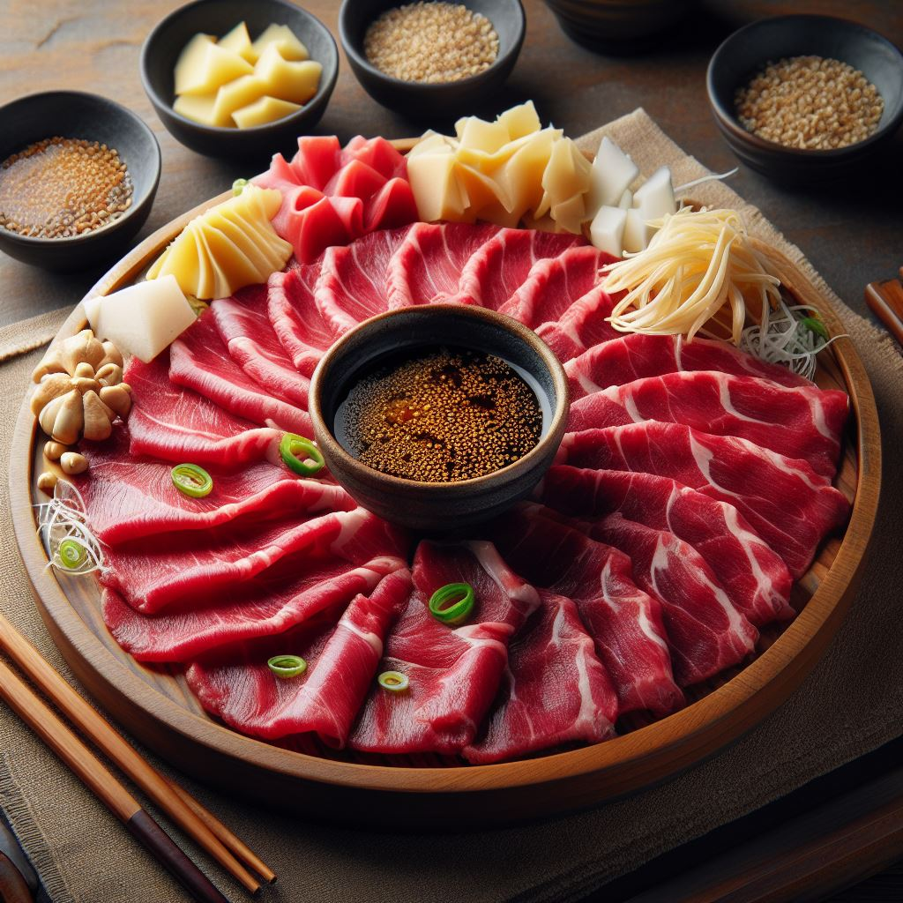

Basashi (Raw Horse Meat)

Nei~gh! Horse, it's what's for dinner! You'll be galloping straight to culinary
bliss with this delectable recipe for raw horse meat!
Ingredients
- A horse
- Your favorite dipping sauce. Soy sauce recommended.
- A hearty appetite!
Steps
- Find a horse
- Give it a pat and a knowing smile
- Butcher it via your favorite method
- Cut the raw meat into small strips
- Prepare some soy sauce or your favorite seasoning
- Enjoy this succulent delight!